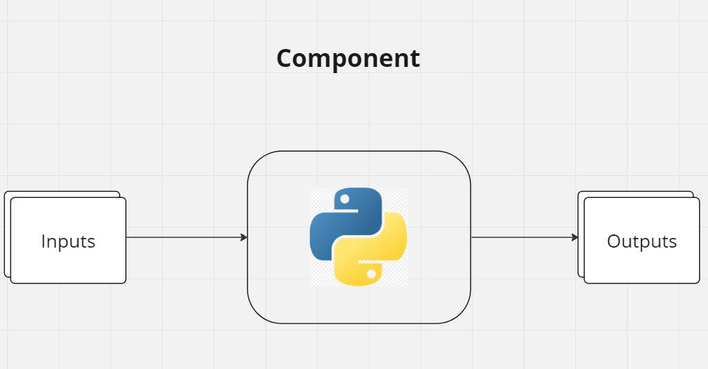

Components#
The basics of components#
A component in an Azure pipeline is a self-contained set of code that performs a specific task. Components are the building blocks of pipelines.
Each component needs to be put in a separate directory and have an associated run.yaml file (the name can be different, but the extension should be .yaml).
For example, if I have 3 components that:
Splits the data into train and test sets
Trains a model
Evaluates the model
Then the directory structure might be like in the components/ directory:
import os
from pathlib import Path
def list_files_and_subdirs(start_path):
for root, _, files in os.walk(start_path):
level = root.replace(start_path, '').count(os.sep)
indent = ' ' * 4 * (level)
print(f'{indent}{Path(root).name}/')
subindent = ' ' * 4 * (level + 1)
for f in files:
print(f'{subindent}{f}')
# Example usage
list_files_and_subdirs('components')
components/
eval/
component.py
run.yaml
__pycache__/
component.cpython-311.pyc
train/
component.py
run.yaml
__pycache__/
component.cpython-311.pyc
train_test_split/
component.py
run.yaml
__pycache__/
component.cpython-311.pyc
In the example above, each component has a .py and a .yaml file. The .py file contains the code for the component and the .yaml file contains the metadata for the component.
For now, lets ignore the .yaml files and dive deeper into the component.py scripts.
Anatomy of a component#
The basic high level concept of a component is the following:

A component can have a bunch of inputs, that are ingested into a python function and the function can create 1 or more outputs.
The bellow code cell contains the file contents of the components/train_test_split/component.py file.
# Sklearn data spliting
from sklearn.model_selection import train_test_split
# Pandas for data manipulation
import pandas as pd
# Defining the component function
def main(
input_file_path: str,
train_test_ratio: float,
train_output_path: str,
test_output_path: str
) -> None:
"""
Splits the data into train and test sets.
Args:
input_file_path: Path to the data file
train_test_ratio: Percentage of the data to use for training
train_output_path: Path to the train data
test_output_path: Path to the test data
"""
# Infering the file type
file_type = input_file_path.split(".")[-1]
# Reading the input data
if file_type == "csv":
data = pd.read_csv(input_file_path)
elif file_type == "json":
data = pd.read_json(input_file_path)
elif file_type == "xlsx":
data = pd.read_excel(input_file_path)
elif file_type == 'parquet':
data = pd.read_parquet(input_file_path)
else:
raise Exception("Unsupported file type")
data = pd.read_csv(input_file_path)
print(f"Number of rows in all data: {data.shape[0]}")
# Spliting the data
train, test = train_test_split(data, train_size=train_test_ratio)
print(f"Number of rows in train data: {train.shape[0]}")
print(f"Number of rows in test data: {test.shape[0]}")
# Saving the data (only to parquet for this example sake)
train.to_parquet(train_output_path, index=False)
test.to_parquet(test_output_path, index=False)
return
if __name__ == '__main__':
# Argument parsing
import argparse
# Parsing arguments
parser = argparse.ArgumentParser()
parser.add_argument("--input_file_path", type=str, help="Path to the data file")
parser.add_argument("--train_test_ratio", type=float, help="Share of the data to use for training")
parser.add_argument("--train_output_path", type=str, help="Path to the train data")
parser.add_argument("--test_output_path", type=str, help="Path to the test data")
args = parser.parse_args()
# Calling the main function
main(
input_file_path=args.input_file_path,
train_test_ratio=args.train_test_ratio,
train_output_path=args.train_output_path,
test_output_path=args.test_output_path
)
As we can see, the above function is a simple function that takes in a path to a dataframe and splits it into train and test sets.
All the components need to be in scripts, thus the bottom part of a component script includes the argument parsing and the call to the main function.
To run the component function, we need to call the component script with the arguments:
!python components/train_test_split/component.py \
--input_file_path data/data.csv \
--train_test_ratio 0.8 \
--train_output_path data/train.parquet \
--test_output_path data/test.parquet
Number of rows in all data: 300
Number of rows in train data: 240
Number of rows in test data: 60
Congratulations, you have just run your first component!
Now let us define the other components.
train/component.py:
# Linear regression model
from sklearn.linear_model import LinearRegression
# Data reading
import pandas as pd
# Pickle file saving
import pickle
# Defining the component function
def main(
input_data_path: str,
output_model_path: str
) -> None:
"""
Trains a linear regression model.
Args:
input_data_path: Path to the data file
output_model_path: Path to the model
"""
# Reading the data
data = pd.read_parquet(input_data_path)
print(f"Number of rows in all data: {data.shape[0]}")
# Spliting the data
X = data.drop("y", axis=1)
y = data["y"]
# Training the model
model = LinearRegression()
model.fit(X, y)
# Saving the model
with open(output_model_path, "wb") as f:
pickle.dump(model, f)
return
if __name__ == '__main__':
# Argument parsing
import argparse
# Parsing arguments
parser = argparse.ArgumentParser()
parser.add_argument("--input_data_path", type=str, help="Path to the data file")
parser.add_argument("--output_model_path", type=str, help="Path to the model")
args = parser.parse_args()
# Calling the main function
main(
input_data_path=args.input_data_path,
output_model_path=args.output_model_path
)
eval/component.py:
# Pickle file loading
import pickle
# Data reading
import pandas as pd
# Defining the component function
def main(
input_data_path: str,
input_model_path: str,
) -> None:
"""
Evaluates a linear regression model.
Args:
input_data_path: Path to the data file
input_model_path: Path to the model
output_data_path: Path to the data with predictions
"""
# Reading the data
data = pd.read_parquet(input_data_path)
print(f"Number of rows in all data: {data.shape[0]}")
# Loading the model
with open(input_model_path, "rb") as f:
model = pickle.load(f)
# Predicting the data
data["y_pred"] = model.predict(data[['x']])
# Printing the MSE statistic
mse = ((data["y"] - data["y_pred"]) ** 2).mean()
print(f"MSE: {mse}")
return
if __name__ == '__main__':
# Argument parsing
import argparse
# Parsing arguments
parser = argparse.ArgumentParser()
parser.add_argument("--input_data_path", type=str, help="Path to the data file")
parser.add_argument("--input_model_path", type=str, help="Path to the model")
args = parser.parse_args()
# Calling the main function
main(
input_data_path=args.input_data_path,
input_model_path=args.input_model_path
)
Combining the components into a pipeline#
Now that we have defined the components, we can combine them into a pipeline.
We can chain the components together using command line arguments:
!python components/train_test_split/component.py \
--input_file_path data/data.csv \
--train_test_ratio 0.8 \
--train_output_path data/train.parquet \
--test_output_path data/test.parquet
Number of rows in all data: 300
Number of rows in train data: 240
Number of rows in test data: 60
!python components/train/component.py \
--input_data_path data/train.parquet \
--output_model_path data/model.pkl
Number of rows in all data: 240
!python components/eval/component.py \
--input_data_path data/test.parquet \
--input_model_path data/model.pkl
Number of rows in all data: 60
MSE: 9.184170649758821
Another way to do that is to wrap everything into Python code and the run the pipeline:
# Importing the components
from components.train_test_split.component import main as train_test_split
from components.train.component import main as train
from components.eval.component import main as eval
# Defining the input data path
input_data_path = 'data/data.csv'
# Defining the train test split ratio
train_test_ratio = 0.8
# Defining the output paths
train_output_path = 'data/train.parquet'
test_output_path = 'data/test.parquet'
# Defining the model output path
model_output_path = 'data/model.pkl'
# Running the components
train_test_split(input_data_path, train_test_ratio, train_output_path, test_output_path)
train(train_output_path, model_output_path)
eval(test_output_path, model_output_path)
Number of rows in all data: 300
Number of rows in train data: 240
Number of rows in test data: 60
Number of rows in all data: 240
Number of rows in all data: 60
MSE: 8.377647096473911
After running the components, the files that are created are:
.
├── data
│ ├── test.parquet
│ ├── train.parquet
│ └── model.pkl
And just like that, we have ran a small pipeline that encomposes components that only communicate through file paths.
The same thing happens exactly the same way when we use Azure pipelines.
Test driven development#
Before going into the metadata definitions of the components and how to communicate them to azure, one thing to do before that is to localy test out components. We have done all the hard part right now, we only need to write some asserts and wrap everything into a function.
A typical test might look like this:
import pandas as pd
def test_pipeline():
# Arranging
input_data_path = 'data/data.csv'
train_test_ratio = 0.8
train_output_path = 'data/train.parquet'
test_output_path = 'data/test.parquet'
# Acting
train_test_split(input_data_path, train_test_ratio, train_output_path, test_output_path)
train(train_output_path, model_output_path)
eval(test_output_path, model_output_path)
# Asserting
assert os.path.exists(train_output_path), 'Train output path does not exist'
assert os.path.exists(test_output_path), 'Test output path does not exist'
assert os.path.exists(model_output_path), 'Model output path does not exist'
assert pd.read_parquet(train_output_path).shape[0] == 240, 'Train data shape is not correct'
assert pd.read_parquet(test_output_path).shape[0] == 60, 'Test data shape is not correct'
print('Pipeline tests passed!')
# Running the test
test_pipeline()
Number of rows in all data: 300
Number of rows in train data: 240
Number of rows in test data: 60
Number of rows in all data: 240
Number of rows in all data: 60
MSE: 10.238891985148166
Pipeline tests passed!
Summary#
To sum up, we have learned:
What are components
How to define components
How to chain components together
How to test components
In the next section we will learn how to define the metadata of the components and how to communicate them to Azure.